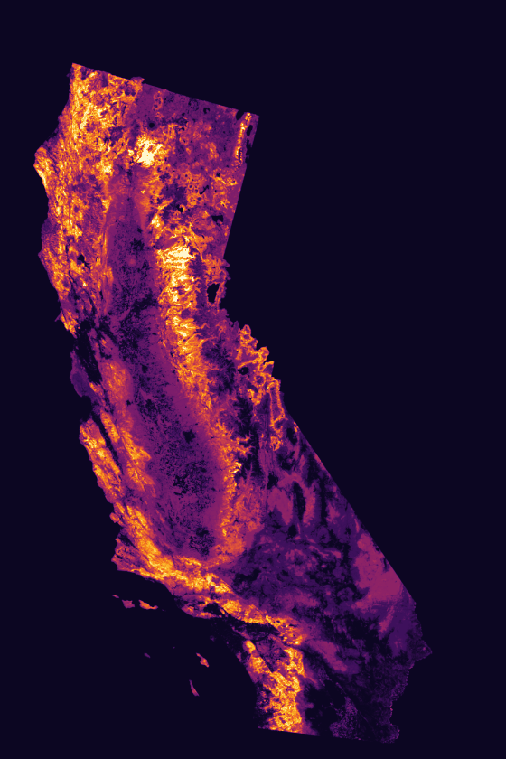

An open, up-to-date set of 30 m rasters for managed and unmanaged forests, shrublands, and grasslands - 41+ years of annual vegetation, carbon, water, fuels, fire hazard, and disturbance. It maps both near-current (2025) conditions and change over time (1985–2025). California is released as annual layers (1985–2025); the contiguous U.S. is now released as decadal snapshots (1990–2024).
Every property is expressed in physical units already in common use across the management and research communities, and all of them are calculated from the ground floor up by a single pipeline — which is what makes them consistent with one another, and over four decades.
Because vegetation, water, carbon, fuels and disturbance are all derived on one grid by one pipeline, questions that span themes — how evapotranspiration responds to canopy loss after a fire, say — can be asked directly, without first reconciling three products' grids, masks and epochs.
Produced by university scientists and shared freely under CC BY. Every release reprocesses the full record rather than appending new years: v2027, covering 1985 through water year 2026, is expected in November 2026.
How good is it? Each layer is checked against independent reference data - field plots, flux towers, stream gauges, aerial survey - and the comparisons are published in full, layer by layer, including where the Almanac is weaker than the alternatives. Some layers are better constrained than others, and the differences matter for what you can ask of them.
The Almanac maps the vegetated, non-irrigated land surface of California - and the contiguous U.S. - managed and unmanaged forests, shrublands, and grasslands, from the backcountry to the wildland–urban interface. The data are produced wall‑to‑wall and then masked to exclude areas such as open water, urbanized land, and intensively managed cropland.
The dataset includes wilderness, intermix and interface areas, managed forests and plantations, and stands recently thinned, cut, or burned.
Each property and year is a separate 30 m Cloud-Optimized GeoTIFF, which are expressed in physical units and parallel metrics that are already in common use.
| Theme | Layers | Coverage |
|---|---|---|
| Vegetation cover & structure | 5 layers | Fractional cover - tree, shrub, herbaceous, and bare - plus areal-mean canopy height. |
| Hydrology | 6 layers | Evapotranspiration and runoff, each under both observed and fixed precipitation, plus soil moisture in absolute and fractional form. |
| Fire hazard & behavior | 4 layers | Landscape fuels (a FARSITE/FlamMap landscape, delivered as single-band layers), plus ELMFIRE-modeled flame length, rate of spread, and relative burn probability. |
| Carbon sequestration | 2 layers | Aboveground live biomass and gross primary production - relevant to nature-based climate solutions. |
| Forest dieoff risk | 2 layers | Tree-canopy drought exposure, both as it actually occurred and under a fixed severe drought (48-month SPI = −2). |
| Disturbance severity | 2 layers | Observed pixel-level annual loss of tree cover and aboveground biomass. |

Flame length, water year 2025. What would burn if a fire arrived under typical local weather — the Sierra crest and the Coast Ranges bright, the Central Valley masked out because it is not wildland.
Every one of the 21 properties opens the same way: pick a layer and a year and it streams straight into your browser from cloud storage, with the colour range and no-data value already set. Nothing to install, nothing to download, no account.
The image above is a fixed 2025 preview. Move the slider and the button opens that year live, at full 30 m resolution.
The whole record, openable: 21 properties across 41 water years, 28 individual layers including all eight bands of the fire landscape. One year slider drives the lot, with colour range and no-data already set on every link.
Open any layer → 02 · What's in itThe twenty-one properties, the six theme groups, spatial and temporal coverage, the California and CONUS tiers, license, and how to cite it.
Browse the data → 03 · How good is itWhat every layer was tested against, on three axes, with strengths and weaknesses at equal detail — including where the Almanac loses to the alternatives, and which comparisons are circular.
See the results → 04 · How to use itWhy the emerging cloud-native geospatial ecosystem can accelerate your work - plus step-by-step guides for streaming the data into ArcGIS Pro, QGIS, and Python. Start here if you want to get to work.
See the how-to guides →